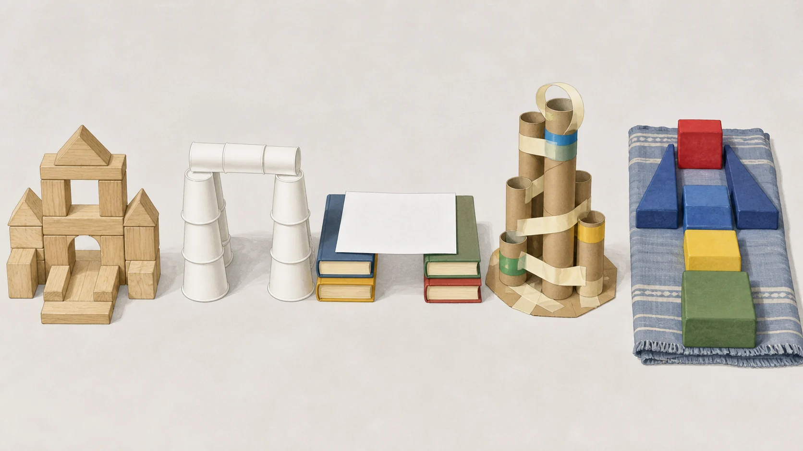

Choose what is already out, then give the child one structure job: make a place, build up, span a gap, shape a sculpture, or build big on the floor. These research-backed routes keep the design with the child and make the adult setup visible.
Start here: Start with a low block home for one favorite toy. Put out six to ten large blocks, set the toy beside them, and ask: Where could the toy go?
Evidence note
Kid Activity Lab created this chooser from current source and search research. We have not family-tested these setups. The age-four route, material choices, adult roles, rescue steps, and stop boundaries are editorial guidance; timing, mess, engagement, learning, repeatability, and safety outcomes are unknown.
Choose for every child who can reach the build
Choose materials that are appropriate for the youngest child who can reach the build. Remove cracked or damaged materials and any piece with an exposed magnet. If any child may mouth materials, stay within reach and watch continuously; skip straws, loose tape, and other loose pieces and use larger solid blocks instead.

Illustrated material routes, not a Kid Activity Lab family-test photo or a product recommendation.
Construction themes: classroom units about vehicles, tools, dramatic play, literacy, crafts, and printables. This page does not promise that curriculum.
Nine builds
Choose one structure job
Use the rescue as a smaller finish, not as a promise that the activity will fit every child.
Make a place
Toy Home
Kid mission: Make a place with an opening where the toy can go inside and come back out.
Editorial preschool route; age 4 included
Needsix to ten intact large magnetic tiles or blocks, one large toy
Adult setup: Choose intact pieces, place the toy beside them, and keep the build on the floor.
Make two side walls.
Leave an opening for the toy.
Add a back wall or roof if wanted.
If the build stallsUse three walls and leave the roof off.
Stop: Stop if a tile is cracked, a magnet is exposed, or pieces are thrown or mouthed.
Parent check: Follow the toy maker's age guidance and remove damaged magnetic pieces immediately.
These sources support open exploration, varied structures and materials, spatial questions, and a bounded adult role. They do not establish that Kid Activity Lab ran these setups or measured their fit, safety, engagement, or learning outcomes.